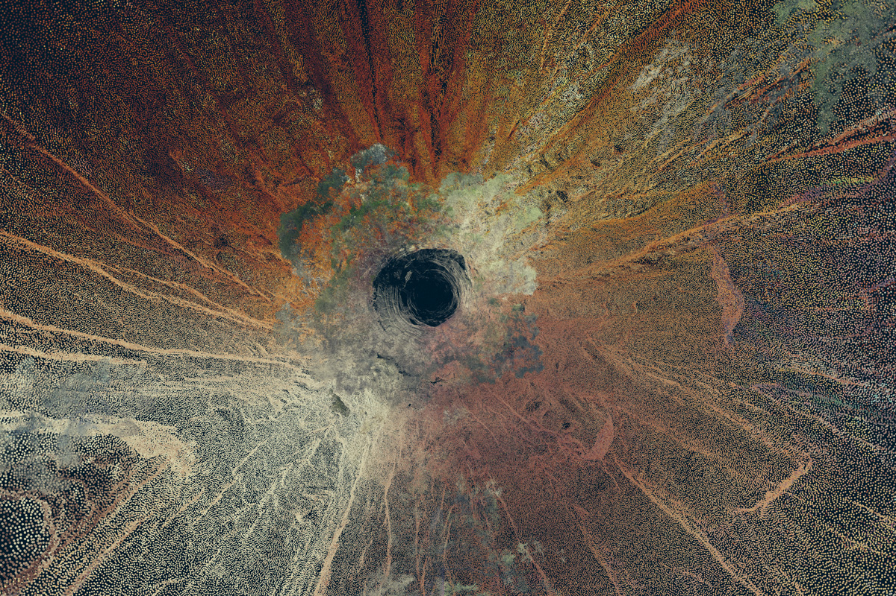
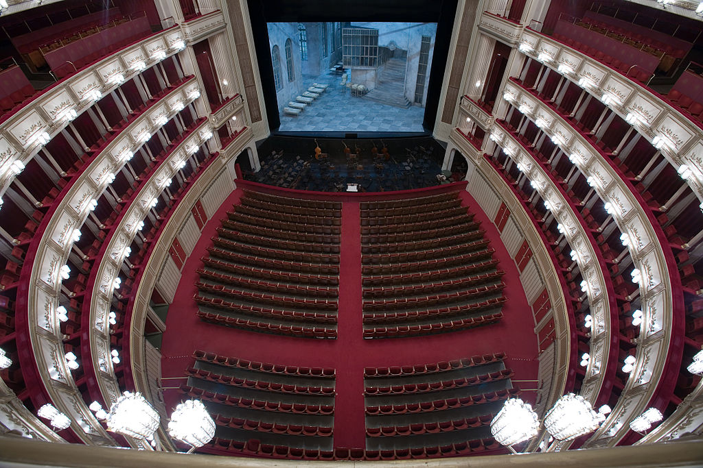
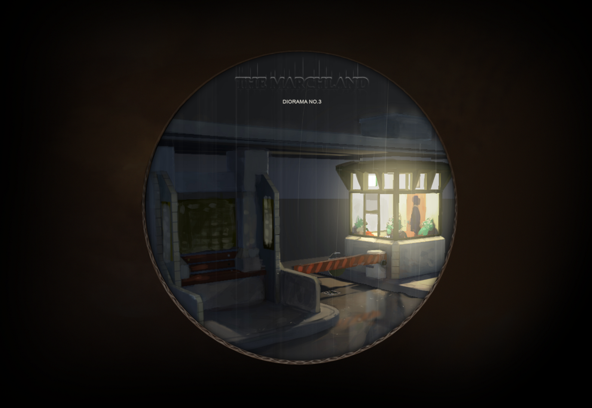

Enter the Writers
Toolbox Full Of Dreams
By: Dirk Vis
The artist that would practise his craft well must first sharpen his tools.’ (Confucius, Analects, 15:10)
You can see how people organise their lives by the the tools they use. The dreams of an artist can be seen in his or her toolbox. For an inconceivably long period of time there was nothing in the human toolbox but the axe, which launched the archaeological archive some two and a half million years ago.(1) However new tools are being developed at an increasingly faster tempo, and it now feels like they just land in our laps. The axe is another thing that my father has taught me to handle, but something like virtual reality glasses are as new for me as they are for him. With each new tool we are able to experience something that could previously only be imagined.
The world outside our immediate surroundings largely comes to us via television and internet. How we organise our lives is perhaps most determined by apps and games: how we spend our time on the train, how we find our music, when we meet up with whom, how we find our way in the world. We follow the patterns determined by multimedia giants and data barons. An unelected class of billionaires that own newspapers, television networks and social media channels direct the broad lines of our lives. We are encouraged to use our computers and phones to view content, to listen and to read. Most digital screens deal with us in a way that exposes us, whereby our information is seen as material to be used and sold by others. Whoever creates something makes use of one of the numerous freely-available tools. But are there also artists who function within this media maelstrom and have simultaneously found ways to escape it? I'm looking for makers who with their games and apps show the luminous and pixelated reality for what it is: a dream.(2) And it is true that they need to make their own tools to do this?
I am fascinated by artists who put energy into choosing and developing the right tool. For example, the cave artists thousands of years ago who were able to make their images of wild animals so lifelike only by viewing the three-dimensional surface of their cave as an instrument for their drawings.(3)
In their footsteps, painters from all centuries have spent time preparing, developing and inventing ways to make colours look more beautiful on their canvases than in reality. You no longer need to make your own pigment nowadays; we take it for granted that it can be bought ready made. But in the twentieth century, one artist dreamt of paintings so intense that the canvases could only be enjoyed in person. He invented a way to bring the gemstone lapis lazuli directly onto the canvas with a special adhesive compound.(4)
A photographer who wanted to see the moments between the moments built a camera that could record more frames per second than the human eye.5 For the first time, photographs were able to move. He was able to visualise the phenomenon that at some point a galloping horse has all four legs off the ground.
There is often a special tool playing an important role behind the scenes in the most famous films. One especially beautiful historical costume drama6 could only be filmed with a lens developed for NASA to look at the moon. This borrowed lens enabled the filmmaker to travel 300 years back in time and catch the light as it shone on the baroque interiors and costumes, for the first time without artificial light.
An artist who wanted to make images that surprised himself programmed a visual social network for other artists for that purpose.7
A game designer who wanted to take a closer look at the everyday experience of sitting at the computer built a 'mod', a modification of an existing game engine. Instead of a twist on the classic first-person 'shoot 'em up' game in which you as a player mainly shoot monsters, he built something essentially different. A game that plays with the buttons on your keyboard and with your expectations. A computer programme that makes you wonder if you're the boss of the buttons you press, or vice versa.(8)
A writer builds a chat programme and works what her users say to each other into her poems.(9) A kid with a smartphone can now easily make a horse float. Such a child may later build an app that shows a different worldview than that promoted by current app stores, with their technological fixes and updates with little innovative content.(10)
Artists develop their own tools and realise their dreams.(11) The latest addition to this list is the work of Daniël Ernst. He makes widely acclaimed dioramas, virtual reality boxes that you can step inside. In an early work of his, Diorama #3, you find yourself in an abandoned toll guard house. You can walk up and down a bit, and exert minimal impact on the curtains with the VR controller, but that's about it. It is no more than this, but you feel with your entire body that it works, that you are experiencing something you've never experienced before. As soon as you put Ernst's headset on, you enter an intermediate world and you can do things you could not before, such as move through walls.(12)
Where others immediately make use of all of the possibilities, Ernst gives himself strict, specific restrictions: no endless virtual landscapes, but a single, carefully considered area. No repetitive creatures and inexhaustible weapons, but a precisely chosen number of objects and details. Ernst does not evoke a surreal world beyond ours, but shows you an alternative reality in our world.
"When you're done, you can shake your head to get out," he tells his visitors. Indeed, as if you're waking up from a dream. Ernst writes his own code in order to be able to work with the VR controller inside the virtual world of his creations. He enters his own work in order to sculpt and draw inside. I believe that's crucial. Every square millimeter has passed through his fingers. It's not technological sensationalism; Ernst uses technique to make an even greater mystery tangible.
As I write this, Ernst puts his hand on his Diorama #4, a miniature virtual reality opera that people will be able to wonder at synchronously all over the world. I've seen an early test, and the finished project will be part of the MediaLab. Putting on the headset is like taking a seat in a virtual theater. You're in a kind of retro-renaissance. It must be like this when you see a shining star light years away at close range. Daniël Ernst told me that he dreams of making eye contact with a supernova.13 Such a thing can only be accomplished by someone who takes his tools seriously. That is the power of Ernst.
Making your way through virtual spaces with Ernst's interfaces means experiencing something you've never experienced before. It's liberating. At the same time you experience how those same interfaces you use almost mindlessly all day long – including Internet browsers, phone games and menu items – structure your normal life. After having a mobile phone for a few years, you can no longer schedule an appointment without extensive back and forth messaging. You learn the alphabet, and can then never look at letters again without reading them. The tool with which you work also works on you.
Paradoxically, makers who offer you other realities provide a view of the world as it is in all its mystery. The broader context within which a work is created determines what it will look like. The perfecting of the tool is already to a large extent the work. Those who want to show that what is usually presented as reality is in fact an illusion can invent new tools. You can let your dreams loose in your toolbox.
Smart Illusion
By: Marloeke van der Vlugt
In an infomercial1 that I came across while browsing around YouTube, an enthusiastic, bespectacled inventor explained a new innovation. The sleek, shiny Smart Pipe , easy to install in your toilet, will catch your stool and analyse it on the spot. This allows germs and bacteria to be detected at a very early stage. You receive tips and tricks via your smartphone to keep your intestinal flora in top shape. Potential disorders are tweeted to the relevant authorities so that they can respond in a timely manner and prevent related undesirable behavior.
In order to match the right person to the right excrement, the Smart Pipe takes an anal photo during the first use. The collected and stored information can then be shared or sold. According to the infomercial, many companies are interested in the metadata. For example, how do your bowel movements relate to your coffee machine or to the (too tight?) clothing you wear? With this information, restaurants can offer you tailor made dinners that cater perfectly to your particular constitution. All information will be secured on a server and maintained by Smart Pipe .
The Smart Pipe is of course a parody, but it is easy enough to fall for it. There are currently so many self-regulating, networked but often nonsensical products2 brought on the market that the Smart Pipe seems feasible.
I was struck by the video, as it brings together various aspects of how we relate to interactive devices and the Internet of Things (IoT) . The IoT is a collective term for objects, spaces and devices that are connected via a digital network and can independently receive, collect and send data. The Smart Pipe video by Cartoon Network is a striking example of our complex relationship with objects that are 'brought to life' with the help of technology.
Better, easier and more efficient?
The arresting advertising campaigns and the attractive aesthetics of the smart thermostat and the self-monitoring alarm system are tempting purchases: we didn't know that they existed, but now that we know we want to own them. The hip neighbour – an early adopter – enthusiastically tells the same convincing story: the devices will make our lives better, easier and more efficient.
At the same time, these objects evoke something else: the uncertainty of the unknown. What exactly are we bringing home? We fear that the objects are unpredictable or uncontrollable, and worry about the consequences for our privacy. The devices fascinate us, we find them attractive and exciting, but deep down we also feel distaste or even disgust for these 'living objects'.
The Smart Pipe video immediate gives rise to these mixed feelings. Although we are revolted by the idea of a photographing toilet bowl, the video simultaneously tries to tempt us with 'futuristic' promises and we may be enticed by the intimate secrets held by this intelligent plumbing system. Smart Pipe is so extreme that our reactions, veering between attraction and repulsion, will also be extreme.
Smart seduction
The communication between 'smart object' and consumer, from the moment of purchase until the actual use, is focused on seduction. However, the practical interaction with the technological object often seems difficult to understand, and may result in a diffuse and unequal relationship. To what extent do these digitally-networked objects actually listen to us? Or do they bypass us? Whereas a good conversation is interactive and shares a common goal, the response capacity of these devices are limited and the goal is often commercial. Although the devices record our needs, the programmed output is fixed and difficult to change..
Take for example a 'smart' coffee machine that brews coffee at a specific time. The timing is linked to the location of your iPhone, so when you approach home the machine begins to brew. But what if you don't feel like drinking coffee when you come home? Do you drink it anyhow? After all, it's ready! And what about when the coffee machine keeps tweeting you that you've run out of coffee beans? Do you immediately run to the store? Or do you let the machine order online for you? .
There are numerous examples of when the system initially seems to communicate with you, but over time ends up determining your behaviour. In other words, what is provided is the semblance of equivalent interactivity, camouflaged in an attractive form. How this 'temptation' process works with the passage of time is often hard to fathom: suddenly you seem able only to respond and you have lost control. The coffee machine keeps ordering coffee beans, and this setting can't be changed..
Such a process can lead to frustration and feelings of powerlessness.(3) I experience these feelings when I have the idea that I'm not being heard, and can't exert any influence to change that. When I feel like my life is being lived, rather than that I'm living it. When too little attention is paid to me as a person, and too much to me as a part in a digital network. .
The ability to analyse the origin of these feelings is one of the reasons I make interactive, technology-based art. I challenge myself to take the time to explore how I relate to the digitally-networked world around me. I observe myself, and step by step unravel my (physical) interaction so that I can experience it consciously and understand what is happening.
For a deeper exploration of the concept of interactivity in relation to the IoT, I'll take a closer look at the Eye Catcher installation created by Lin Zhang and Xie Ran in the Interactive Architecture Lab in London. This interactive technological installation can be seen this year at Cinekid's MediaLab..
Each time a unique artwork
This is just one side of the coin: of course, the viewer reacts first to the original state of the work and tries to change something with his or her behaviour. .
But as far as I am concerned a work is only interactive if the resulting change then again challenges the spectator's behaviour, and so on and so forth. A dialogue arises between the viewer and the artwork that transforms the viewer into a participant, performer or even co-creator. Further reasoning implies that a unique artwork will continuously be created with real interactivity: after all, each person is different, will react in his or her own way and provide other input..
Let's look at the Eye Catcher installation. This is composed of a simple photo frame mounted on a white wall. There is no image; the frame seems to be empty. When the visitor walks by, the frame slides across the wall to follow the visitor..
When the visitor stops and looks, the frame positions itself at eye level in front of his or her face. The dark fluid hidden at the bottom of the frame clusters together and two black eyes emerge. A hidden video camera registers the facial expression of the visitor. The magnetic black liquid reacts by drawing eyes that express basic emotions. Imagine thoughtfully squinted eyes, piercing bright eyes or a happy, sparkling gaze resulting in eyes that look like they are exploding..
Is this work interactive? When we apply my previous definition, the answer is yes. The frame moves with the visitor, and the liquid responds to his or her facial expression. The visitor then moves differently in order to make the frame shift and let the liquid form to display different expressions. The number of emotions the magnetic fluid can express is limited. Still, the result will always differ, as each visitor explores his or her own unique series of interactive possibilities. Thus a different story is visually composed over and over again, creating a unique presentation..
An interactive work of art is therefore a semi-finished project: participants are needed in order to 'finish' the work.4 There are however degrees of interactivity. On the one hand, there are works in which the limits of the interactivity are clearly indicated, such as with the Eye Catcher. The interaction is simply the way to communicate with the work. On the other hand are installations where the possibilities appear endless and unpredictable: for example installations based on certain computer algorithms that can evolve ad infinitum.
But no matter what degree of interactivity they possess, these works require a certain attitude from the public: something or someone must take action - and invest time – in order to experience the overall result of the intended artwork.
Mirror
Here also lies the crux: an interactive work reflects our own actions, our decisions and their consequences. Indeed, interactive technology functions as a mirror that reflects not only myself as participant but also takes my actions as input to modify and react to.5 The interaction thus says something about ourselves in relation to our environment and allows us to experience this relationship..
What does the Eye Catcher reflect to us? In this work, the limits of interaction are quickly apparent. Communication works only within the predefined technological framework: when the viewer moves, the frame moves with him or her. If the viewer looks, the frame shifts to eye level. The frame thus requires very precise actions from the viewer; otherwise it does nothing. And the spectator does exactly as requested; otherwise he or she does not see the installation in full action..
Next, the spectator influences the magnetic fluid, but the possibilities here are also limited. The shape of the liquid is actually the result of a preprogrammed facial recognition system that determines which emotions the viewer exhibits based on an average. The system thus determines whether someone is angry or happy, and reacts with a predefined 'answer'.
The viewer is hereby voluntarily restricted to become part of the homogeneous, uniform group for which the system is designed. And thus the viewer - unconsciously – limits his or her own unique and physical communication possibilities to the options put forth by the computer..
Remarkably, despite the Eye Catcher's limited capacity for interaction it still feels like you are communicating with the frame in a transparent and equitable manner. But, as with the IoT, this is not true. Something else happens during the interaction that allows us to feel connected with the object..For mutual benefit
Now what exactly is the appeal of this installation? It is no more than a square brown frame, a white background and a simple drawing of two eyes. But the object exhibits behaviour, and this evokes a strong emotional response from the viewer. The creators of the Eye Catcher talk about the experience of an 'uncanny' feeling when an object seems to be alive although we know that it is not. This confusion leads to the feeling that 'real' contact and a connection with the object has been made.
The Internet of Things also works in this way. Smart objects sell themselves as attractive systems that will take over certain actions and tasks in equal communication with us. They appear to want to co-operate with us for our 'mutual benefit', as with the Smart Pipe.
And why do we believe this? As with the Eye Catcher, we are attracted to these devices because they appeal to human communication, to our bodies and to our senses: Siri talks to you, Google Car seems to wink and opens the door for you. The Smart Pipe shows our hidden innards – our bowels – to ourselves and the outside world.
A'living' object such as the Smart Pipe crosses a line and becomes a taboo. It comes too close, and that is why we find such objects exciting. Moreover, living objects fit into the category described by French philosopher Julie Kristeva as 'abject'.6Her theory can help to clarify our fascination with this type of object.
Kristeva suggests that as we grow up, we learn that the elements forming the boundary between our bodies and the outside world – such as the eyes, mouth, anus, genitals and associated bodily fluids – are 'indecent' or 'disgusting'. According to her theory, the rejection of these 'abject' elements, which we find simultaneously attractive and repulsive, is part of becoming an adult.
So we hide our tears, keep our saliva in our mouth, close the toilet door, or urinate behind a tree. And as a consequence of this rejection, we experience loss or nostalgia for the rest of our lives: we (un)consciously still long to overstep the imposed boundaries and rules, disrupting the system and the order.7
When we are confronted with an object that exhibits human behaviour, it appears that we project our desire for the abject upon the object.
And this desire is fuelled when the object displays some abject elements, such as orifices or juices. This is the case with both Smart Pipe (showing excrement) and Eye Catcher (communicating via fake eyes with our eyes and facial expressions). This makes them attractive and fascinating.
At the same time, these objects invoke resistance by confronting us with the abject: that which cannot be shown (our innards) and that which is not supposed to be alive (an object). In order to explore this ambivalent and unacceptable feeling, we let ourselves be seduced. We want to experience the taboo – what is not possible, what is not allowed, what must remain hidden – with goosebumps of disgust and delight.
Uncanny valley
And what about the aesthetics of smart objects? Must the objects have our physical characteristics to enable this projection? To what extent can the shape of the object can be abstracted and still be experienced as alive?
In 1970, Dr. Masahiro Mori, a professor of engineering science at the University of Tokyo, studied the following question: when a robot looks increasingly human-like, does our affinity with it grow? What he found was that we do not accept a robot that appears too realistic. When the robot looks too much like us, we reject it.
He called this result 'bukimi no tani', which was later translated as 'the uncanny valley'. The translator probably chose the word 'uncanny' ('bukimi' can also mean 'strange' or ‘creepy’) as it resonates with Sigmund Freud's 1919 essay entitled Das Unheimliche. This essay was translated in 1960 as The Uncanny.
'Unheimlich' literally means 'homeless'. Freud described 'Das Unheimliche' as an ancient and elemental sense of fear that is inseparable from us – as humans – and thus also evokes a certain recognition.8 The term therefore seems to overlap with Kristeva's abject,9 although the feelings of attraction and recognition are lost and directly replaced by rejection (such as with the human robot). The precarious balance between attraction and repulsion turns into the latter. Fear also plays a role: a familiar inanimate thing can become too alive and too real, expelling us from our home.10
Designers thus ensure that technological objects avoid forms that are too human. But devices must cohere to the contemporary ideal of beauty. That is not too difficult, as the current human ideal of beauty seems in fact to be inspired by machines. A flawless body and a high level of controllability are required. The skin should no longer display its natural 'hairy' state. As a result, we shave from head to toe in order to be as smooth and shiny as a machine. The media depicts the ideal man with a 'hard body': imprisoned in an unnatural solid shield as if the skin is made of plastic or metal.11
Objects thus have a shiny, smooth surface and a tight but 'sensual' form. This aesthetic is immediately recognisable in the sleek Smart Pipe and other commercial devices like smart thermostats.12 But the Eye Catcher also plays with these features: the eyes are reduced to simple but expressive lines, and the frame hangs on a pristine white wall.
Practise makes perfect
As previously described, there are various facets to the allure of a 'living technological object'. To see through and understand this attraction, we need opportunities to 'practice' interacting with it. I see an important role for interactive technological art here; the genre of artwork that (re)presents the relationship between technology, objects, spaces and the human body and offers the possibility to zoom in on, experience and then analyse the interaction that takes place
These artworks give people the opportunity to explore how the complex relationship with the outside digitally connected world takes shape. Of course this only works when the experience is translated to the daily environment, such as the internet-connected-house.13 The Eye Catcher's frame on the wall appears to stimulate this by referring directly to one's own cozy home.
So: allow the shining, magnetic eyes of the Eye Catcher to draw you in. Then take the time to 'look back' at the eyes: walk by again, change your expression, test all of the possibilities and seek the limits of the interaction. Experience how this makes you feel.
During the Cinekid Festival you can look behind the smooth white wall. So take the chance to meticulously consider, examine and analyse the technology that would normally remain hidden: the rails, which allow only one specific route for the frame to travel, and the visible control of the frame by a computer. The electrical wires, like long, tousled hair that connect the components together. The programming language that, softly cursing, operates the whole apparatus.
And afterwards, question the interactive process critically: what steps did you take? Were you enticed? By what? What choices did you make?
And remember that the work functions as a mirror: more than anything, the interactive choices say something about you. They show how you act and interact with the technological world that surrounds you.
Into The Depth
By: Marijn van der Jagt
Hugging a tree. Not an activity that you would expect in Cinekid's MediaLab. But this year, in the technology 'arcade' full of computer games and interactive installations, there really is an an oversized tree trunk. Children in the MediaLab who want to experience this bulky colossus are given VR goggles and a special glove. With this equipment, when they throw their arms around the artificial trunk replica, something magical happens. They see and feel a giant sequoia – the biggest tree in existence with a potential lifespan of thousands of years..
De diepte in
The images of this sequoia were filmed by the English collective Marshmallow Laser Feast in California. Players of the interactive Tree Hugger installation do not need to travel all the way across the Atlantic in order to fathom the tree's measurements. Looking upwards with the VR goggles, one experiences the dizzying height of the sequoias. Touching the ancient bark is rewarded by a detailed zoom in, allowing the tree hugger to get lost in the organic landscape..
In 1964, when television was still a new medium, Canadian media philosopher Marshall McLuhan wrote a book called Understanding Media. In this book he described the media with which we surround ourselves “the extensions of man”: expansions or extensions of our limbs and senses..
The ‘verrekijk’ or 'far look', as Dutch author Gerard Reve invariably called the television, extended the viewer's sight and hearing to the far corners of the world. And all of the devices and means of communication that have since been brought on the market have increasingly allowed us to reach into the distance: faster, more directly, from more places, at any point in time and in ever more fulfilling ways.
Watch and feel
The Tree Hugger's VR goggles and sensory glove are extensions of our eyes and sense of touch. The makers of the installation enable you to reach out to a tree in California: not only virtually through the filmed images but also literally, with widespread arms that are not able to encircle the broad trunk. You can watch and feel the sequoia up close..
It's as if this is Marshmallow Laser Feast's answer to the Pokémon GO game, currently extremely popular among children. To the delight of many parents, Pokémon GO lures children outside to look for creatures that they can find via a map on their mobile phones, both in their immediate environment and far beyond.
All of a sudden you come across children – even those who hate walking – in parks and forests, searching for rare Pokémons to add to their collections. The animals they must catch and train possess special natural powers; they can do battle with floods and lightning, with electricity or earthquakes. But they are illustrated fantasy creatures, with no real connection to the location where you find them. And that also goes for the players of Pokémon GO. Anyone looking for a Pokémon in the park is not looking at the trees but at his or her cell phone..
The players of Tree Hugger do not move physically, but are rather brought to a standstill, and they make contact with a tree that really exists. What is remarkable is that you can experience not only the sequoia's magnitude and bark surface, but the creators also let you penetrate deeper into the tree's 'being'. A prolonged embrace will allow you to see the sequoia's vibrational energy flow, as portrayed by the makers in virtual reality. Due to its size and age, the Californian tree is a tourist attraction. Marshmallow Laser Feast offers more than a virtual trip to this famous sequoia. Tree Hugger lets you see and experience how life flows through one of the oldest organisms on our planet..
The dragonfly's superpower
The interactive tree is a continuation of the virtual reality project In the Eyes of the Animal, in which Marshmallow Laser Feast lets you see through VR goggles how animals including a dragonfly, a frog and an owl experience a forest. From the viewpoint of a dragonfly for instance you see everything in swirling carbon molecules. Not only is this a spectacular sight, but it also gives the dragonfly a superpower that transcends human sentience..
Like Tree Hugger, this is a work of art that combines artistic imagination and the possibilities of the newest technology with wonder about the beauty of nature and the sophisticated intelligence of biological life, about which human still have little knowledge and awareness. We are fascinated by the possibilities of increasingly 'smarter' devices, while we are only now beginning to realise how widespread the communications network is for 'insignificant' organisms such as fungi..
The American science fiction writer Jeff Vandermeer articulated this nicely in an interview about his Southern Reach trilogy, in which he gives the plants and animals in a mysterious nature reserve a sinister consciousness: "When you think about the complexity of our natural world — plants using quantum mechanics for photosynthesis, for example — a smartphone begins to look like a pretty dumb object.(1)
At a lecture in London, a member of Marshmallow Laser Feast collective expressed how overwhelmed they were by all of the amazing discoveries they made about complex creatures and forces of nature during their project research. This group of techies became inspired with the mission of using technology to promote the latest biological and scientific discoveries in their non-profit work. A utopian desire, you might say. But which utopia is depicted in Tree Hugger and In the Eyes of the Animal?.
The publicity that accompanies each new device makes it clear that technological progress responds to a desire for contact far beyond our physical reach. A recent advertisement pities a boy in love whose phone subscription makes him wait half a year for a new mobile that lets him also see his girlfriend during a call. It is as if the tender bliss of these new lovebirds will be violated if they cannot FaceTime.
We are continually promised a utopia, holds media professor Imar de Vries in his 2012 book Tantalizingly Close. The book is an archaeological investigation of the myths surrounding the presentation of new communications inventions to humans. One utopia that advertisements remind us about each day is the perfection of interpersonal contact: if we have the right medium in our hands, contact with our fellow humans, wherever in the world they may be, will be easier and more complete..
In the tree
In a sense, Marshmallow Laser Feast's VR projects conform to this idea of progress. The technology used offers the possibility of contact beyond our physical reach. But the true phenomenon presented by these interactive installations is the reach for depth rather than distance. With In the Eyes of the Animal you experience the surrounding forest from the perspective of the animals that live alongside us. With Tree Hugger you can look inside the tree with a kind of x-ray eyes. As if you, like the dragonfly, perceive life on earth through the basic elements from which it is composed: molecular particles, energy flows, the light that a tree converts into nutrients through photosynthesis..
In de boom
You could call this a movement inward. This same shift is happening in the various communication devices, apps and gadgets that have come onto the market in the past decade. Joggers run around with heart rate monitors and pedometers, office workers can track their energy use and movement, for dieters there are BMI calculators and calorie counter apps, and for hypochondriacs there are home tests for bowel disease and lung disorders. Devices measure or regulate the indoor climate or the uptake of oxygen in the blood, and ears can be protected against noise with a decibel meter..
Seismologists are currently calling for the introduction of a mobile phone-based notification system for earthquakes in countries with little money and infrastructure, as the sensors in smartphones seem applicable for the early detection of subterranean vibrations. This is a life-saving interpretation of the vibration function of cell phones. This signal – which elicits the physical reaction of a quicker-beating heart through fear or expectation in the smartphone owner – could thus be linked to the turbulence of the volcanic magma deep below our feet..
McLuhan could not have foreseen this kind of extension of the person in a period when earthquakes were still recorded by measuring instruments. These developments are made possible as technological inventions become smaller, more manageable and more portable..
Every touch and movement
The PC that stood on a desk opposite the user ten years ago, the telephone, stereo system and television that each had a permanent place in the living room, and the camera that was only taken out of the closet on special occasions, have been merged and reduced to a paper-thin tablet, a smartphone or a smartwatch worn close to the skin. Displays previously operated with buttons have been transformed into sensitive screens that register every touch and movement of our fingers..
The latest development is the use of the surface of the skin as a keyboard to control a device that is too tiny to have its own keyboard.(2) The distance between 'hard' machines and the 'soft' human body is disappearing in an almost breathing, pulsating interaction between human and matter..
In Tantalizingly Close, Imar de Vries cites French media philosopher Pierre Teilhard de Chardin, who although he is much less known than Marshall McLuhan preceded him in a visionary analysis of technological progress..
In his 1959 book Le Phénomène Humaine, de Chardin, who was also a paleontologist and a theologian, proposed that all matter is ultimately reducible to the same substance. He saw the development of our earth in three stages: first there was the geosphere (the crust), and then the biosphere was formed (life with all of its organisms). He called the next stage, which would be established in the future with the help of networks of technological inventions, the 'noosphere'. All terrestrial organisms, matter and human-made machines would unite in the noosphere as one big consciousness. It was all a bit esoteric and eccentric, as Teilhard de Chardin considered the basic substance constituting all earthly phenomena to be 'divine'. Furthermore, regarding the energy flows that would connect everything in the future, he suggested that the technological exchange of signals was similar to a telepathic coordination of all human brains.
Yet thanks to the latest technologies and scientific discoveries, Teilhard de Chardin's vision is quite applicable to the consciousness being developed half a century after he formulated his theories. You can see the 'internalisation' that he predicted in Marshmallow Laser Feast's interactive projects. And also in the quest by artists/fashion designers for 'smart clothes' – that for example via sensors that register heat, skin moisture levels, heart rate or physical proximity – provide information about the emotional life of the wearer. The Los Angeles-based designer Noori Farahi for example developed a piece of women's clothing entitled Caress of the Gaze. The upper part that covers the wearer's neck, shoulders and chest is an artificial 'skin' full of soft spines that make wave-like contractions like a living organism. This contraction happens in reaction to the gaze of someone standing before the wearer; a camera in the artificial skin records how the eyes of the 'viewer' move over the clothing and the underlying body..
Although we are hardly aware of it, this 'body scanning' is something that everyone does. Farahi's garment provides a physical response to the inquisitive, sometimes erotically charged look without the wearer being able to exert any influence. Caress of the Gaze represents an animal interaction between bodies that usually escapes our civilised consciousness, taking place at the level of energy and impulses, in the action of hormones and body fluids. It reminds the wearer that humans are beings of nature..
Extraterrestrial celestial body
Two other interactive works of art that can be experienced at the 2016 MediaLab reflect the same organic internalisation: Anima and Fiet, two 'living' objects created by Dutch artists..
Fiet by Studio Tour is a white, cloud-like sculpture that hangs above the player, with a movable surface formed entirely of hollow cones. When the player makes a sound the 'skin' responds with contractions, giving the impression that this creature is alive and aware of its surroundings. Anima by Nick Verstand is a screen in the form of a giant sphere. Images are projected from the inside onto the surface of the globe, forming liquid patterns in changing colors that seem to move in response to the viewer's presence. It is a bustling, vibrant ball of energy..
Fiet is reminiscent of a mysterious animal that lives on the ocean floor, whereas Anima evokes an alien celestial body. Both may be discoveries that humans can perceive only due to inventions that let us reach into the distance. Yet you do not view them remotely; they are 'life-sized' objects in your proximity, and they relate to your presence and to your body..
You can play with these lifelike creatures without touching them. And the relationship you create with them is intimate, sensual and purely physical. They are bodies. The awareness that they insinuate using sensors and sophisticated motor control, cameras and moving projections, is a fine example of state-of-the-art technology. And yet they bring the players back to their own nature. They reflect what else a human is: a wonderful product of life on earth, breathing, throbbing and vibrating with energy. That is what the MediaLab children and their accompanying parents will experience this year. Hugging a tree. Embracing life. Teilhard de Chardin's eccentricity proven right in an Amsterdam arcade full of technological gadgets.
Graceful Degradation
By Kaweh Modiri
Cinekid's MediaLab is a playing field. Here, the makers on the frontlines of technological creation are producing visually spectacular artworks that react to sound, movement, light, air or touch. You can cuddle with a tree, or marvel at a mysterious interactive projection screen in the form of a globe. New interactions continuously take place between the visitor and the work, creating a unique story. Yet there is a story behind the stories. That story is about the development of intelligent machines.
My thoughts on this subject, as well as my approach to such interactive art, cannot be viewed in isolation from my own work as a writer and filmmaker. I enjoy challenging my role as creator by adding elements over which I have little or no control. This sets up a relationship between authorship and chance, between control and irreversibility. I strive to articulate my human experience through my work, which becomes more accurate and more personal. The urgency to express myself stems from a feeling of human inadequacy; willing, but not able to do more.
My film Bodkin Ras,1 set in the Scottish town of Forres, makes use of both actors and documentary characters. One of these characters is Eddie, a local Scot who drinks away his days in the Eagle Bar. His sons both hung themselves at a young age. When we hear Eddie speak in interview form he talks about how he longs for change. The first step would be to stop drinking, but his desire remains abstract. We see him entering the same pub every morning, and he is drunk before noon.
In my eyes, the fact that Eddie does exactly what he doesn't want to do every day and is fully aware of it makes him very human. His story resonates with the abstract desires of the spectator because it's so recognizable. And despite the fact that everything we see points to the opposite, there is nevertheless hope. The film ends with the words: “I will try.”
Such paradoxes are not strange for humans. We often want one thing, yet we do something else. We try although no one has said that we will succeed. And then try to heroify our failure and make it into a meaningful narrative, packaging it as a sign of our intransigence. And our failure is never a permanent failure, because hope always glimmers on the horizon; if there is one thing that nobody can take away from us it is our hope.
The glorification of impotence
I participate fully in this paradox as a filmmaker and storyteller. I am convinced that regardless of our place in the whole, our human experiences are worthy of articulation. Why? Because we happen to be the only ones who undergo these unique experiences and are able to express and convey them to our contemporaries and future generations.
I have recently started to wonder if there might be 'more'. A human mission to further evolve into better beings with greater self-knowledge and capacity. Artificial Intelligence that -- unlike me -- doesn't need to hide behind the glorification of human inefficiency and impotence.
In his book Superintelligence, philosopher Nick Bostrom explains that humans are dominant due to their intelligence. Other animals have stronger claws or jaws, but humans have better brains. This has enabled us to develop language, technology and complex social structures. But, Bostrom asks, what if machines are built that are smarter than us? This new superintelligence would become very powerful. Just as the fate of the gorillas now depends more on us humans than on the gorillas themselves, human destiny would become dependent on this superintelligence.
How should we think about a world in which human interests no longer have the highest priority? Where technological progress and innovation would not be (primarily) at the service of humans? Would an AI that does not struggle between its inner world and its outer presence have the need to write novels? That is doubtful. Drama belongs to humans. To think about an intelligence that is not characterized by failure is also to think about the end of our human narrative.
Keep running
We are far from this point. The technology is still ours, and we control the playing field. The champagne will flow: the exhibition is open, as colourful and vibrant as fireworks. The hair is curlier than usual. There is running, playing and building. I observe children who have been raised with love, and hope that they will not later push me off the roof. I make a note to my future self in a little notebook:
There is no fort to defend. The surrender is complete. I am virtually present in many places; sensational impulses shoot through my brain. Existence is fragmented and abstract. Keep running, keep breathing. Time can multiply infinitely in this inhuman orbit. Keep running. Sooner or later it will be there. It won't be long. Keep breathing. It will be heavenly.
stow away my notebook and begin my journey through the MediaLab. The first piece that strikes me is Treehugger, a project by the London-based design agency Marshmallow Laser Feast, commissioned by Cinekid, STRP, Southbank and Migrations. It is a Virtual Reality installation of a sequoia, a tree that can grow to enormous proportions. The harder you hug the tree, the further you can penetrate its different layers to experience what is living and moving inside. The body is an essential part of this experience: if you don't touch anything, not much will happen. So not only do you see this work, you undergo it physically.
The creators say they want to bring people closer to nature with this piece. In their previous VR installation In the Eyes of the Animal, they also played with the human yearning for nature, with which most people come less and less often into contact. In this VR experience, the spectator looks through the eyes of a bird, flying through the layered video scan of a forest, or is a snake crawling over leaves. Instead of VR goggles and separate earphones, Marshmallow Laser Feast created a large helmet so that the viewer is even more isolated from the real world and can fully merge with the experience of an animal in nature.
These artworks prove that the experience of nature can be simulated via technology. Treehugger is not a substitute for the original sequoia: in the VR version we can penetrate the different layers of the tree, something which is not possible with a real tree. Through the seclusion provided by VR goggles and headphones, the experience feels authentic and unique because you're the only one having it at that moment. We often associate this authenticity and seclusion with (being in) nature.
Like an animal
Although Studio Toer's Fiet does not simulate nature, it moves as a living organism and reacts to the viewer. It hangs overhead like an animal and consists of many cones, the points of which move against each other and even split apart. It has sound sensors to catch changes in volume. With sudden noises it shrinks inwardly, as if scared. It breathes, moves organically and appears to relate to us emotionally. It is not only visual, but also a physical experience of the fading line between what lives and what does not.
I grab my notebook in a dimly-lit, secluded corner of the Factory Hall and ask myself what these works say about humans in the existential sense. Because it is not only machines that are programmed to mimic nature. Humans are programmed to embrace a new nature. It is the language that is being developed: a technological reproduction of nature that can evoke an experience and effect similar to -- and perhaps even extending further than -- 'real' nature.
As more and more data becomes available, sensors become more sensitive, processors accelerate, and materials and mechanisms are improved and refined, an increasingly articulated vocabulary for this new nature is arising. We learn to read, understand, and accept her. And in turn, the machine learns to better analyse, predict and manipulate people.
More stimuli
Technological developments allow us to tell our stories in a different, more sophisticated way than was possible in the past. Developments in the industry focus mainly on viewer experience enhancement. Numerous developments, including VR, are still in their infancy. The film industry in particular is looking at developments that aim to make the illusion even stronger and the viewing experience even more all-embracing. It seems that we need more and more stimuli in order to be able to believe the illusion. Not only must the nasty man before our eyes be repulsive in appearance, but we must also be able to smell him. We no longer want to look at a screen, we want to stand inside it. But watching a James Bond movie in VR is not the most astonishing development. The influence of the disappearance of the fourth wall (which preoccupied theater makers in the middle of the last century)and the projection techniques on the spectator's individual experience offer possibilities that are even more far-reaching.
Nick Verstand makes use of ones of these possibilities. His work Anima hanging in the MediaLab is a large sphere upon which pixels are projected from the inside. The pixels are interactive: sound and image emerge in real time through interactions with the viewer. The original distance from screen to spectator is blurred. Anima reacts to the audience with a variety of audio-visual communications, giving it the appearance of an autonomous object. The screen is no longer something we just sit and watch, but something we can now also walk around. The story is the relationship between humans and intelligent objects.
Curious objects
The works in the MediaLab show us that we can enter into relationships with objects that are characterised by their behaviours, and which in turn show a curiosity about our behaviour. We learn a new language that emerges from experience.
It is unclear how long humans will remain the central factor in this experience. We can establish that AI is becoming more intelligent, and will surpass human intelligence in more and more areas. The pioneers of AI, according to Bostrom, have been so focused on the possibility of human level Artificial Intelligence, that they have barely contemplated greater than human level AI. I may still experience the physical mixing of humans and AI during my lifetime. And then, step by step, there will be less and less human and more AI. Methinks that a new creature will emerge. The next evolutionary step.
But that does not mean we cannot play and experiment, and it does not relieve us of the necessity of examining our existence as human beings in relation to changing technology. On the contrary: the urgency is only greater. Rather than coming up with appropriate hairstyles and outfits for the AI that will administer our lethal injection, we can explore new areas with a spurt of inquisitiveness, develop new languages, and transfer our curiosity, playfulness and sensitivity to the next specimen.
Image text Image text Image text Image text  Image text Image text  Image text Image text Image text  Image text (1) See: Link
Apendix - Graceful Degradation

(2) See Blog #6, Something to hold on to: Link
(1) An Interview with Jeff VanderMeer, “Full Disclosure, I’m Really A Komodo Dragon”, by Lincoln Michel in BuzzFeed, 15 March 2014, Link

Apendix - Into the depth
(13) Link
(13) Loosely from: ‘Het tijdperk van de gladjanus’, Anneke Smelik in: Deus ex Machina, jg 34, nr 133, juni 2010
(12) ‘The concept of abjection is often coupled (and sometimes confused) with the idea of the uncanny, the concept of something being "un-home-like", or foreign, yet familiar’ from: J. Childers/G. Hentzi (eds), The Columbia Dictionary of Modern Literary and Cultural Criticism, 1995. From: https://en.wikipedia.org/wiki/Abjection#cite_note-13
(11) Tuur Deven in: ‘Theater der dingen: een leegte zonder menselijk leven’, De Wereld van het Poppenspel, Summer 2016, page 61
(10) Childers/G. Hentzi (eds), The Columbia Dictionary of Modern Literary and Cultural Criticism, 1995. From: Link
(9) ‘The concept of abjection is often coupled (and sometimes confused) with the idea of the uncanny, the concept of something being "un-home-like", or foreign, yet familiar’ from: J.
(8) Paragraph based on Frank E. Pollick, ‘In search of the uncanny valley’, University of Glasgow, 2010
(7) Loosely from: ‘Spreken om het leven. Vrouwelijke subjectiviteit in het postmoderne theater’, Mieke Kolk, Tijdschrift voor Genderstudies, #1 1998
(6) Julie Kristeva, Pouvoirs de l'horreur. Essai sur l'abjection, Le Seuil, 1982
(5) Loosely from: David Rokeby, Transforming Mirrors, Suny Press, 1996
(4)‘The recipient becomes the performer’, from: Katja Kwastek, Aesthetics of Interaction in Digital Art, The MIT Press, 2015, page xvii.
(3) See Blog #5 A Step Back about the episode of Tegenlicht examining why people turn away from the Internet and other technological innovations : Link
(2) For example, ‘Anatomic Shoes’ that do nothing more than turn the Wi-Fi on or off, the ‘HidrateMe Smart Water Bottle’ that monitors your water intake, or the ‘Musical Tampon’ that allows your unborn fetus to listen to your musical mix.
(1) See: Link
Apendix - Smart illusion
(15) In - again - Italo Calvino's short story collection Cosmi Comics (1965), the author casts supernovas, planets, interplanetary dust clouds and black holes with equally unpronounceable names in leading roles as all-too-human characters.
(14) In fact, Diorama #3 is a contemporary and hi-tech version of the story Le Passe-Muraille (1943) by the twentieth-century writer Marcel Aymé, in which the main character can walk through walls (which incidentally gives him more stress than benefit). Aymé's stories have the same physical effect on me as the work of Daniël Ernst, where you sometimes feel more spirit than human.
(13) One of my favorite not-yet-in-existence apps is the electronic device that Crawford Tillinghast in the story From Beyond (1920), again from H. P. Lovecraft, has developed: the Resonator. This device sends a resonant wave to your pineal gland so that you as a user are able to perceive layers of existence that exist but are not part of 'reality'. The story ends in pure horror and shows that we should be happy that we can't absorb everything with our senses just like that. At the same time it would not surprise me if someone presented an app in a dozen years that visualises all of the dark matter floating through space.
(12) This example does not yet exist in reality. It is an preliminary result made with the twitterbot mentioned in footnote 1: a programme in the design phase that searches live tweets and combines the results with a database of words in order to generate a series of new artists and their dream tools.
(11) Philosopher Matthew Crawford would definitely appreciate such an app. Crawford wrote the book The World Beyond your Head (2015), in which he demonstrates – with amazing precision in just a few concrete examples and better than I can repeat here – how the interfaces of most apps control the user's position, gaze and expectations. This happens completely unnoticed, and extends beyond the smartphone.
(10) This example does not yet exist in reality. It is an preliminary result made with the twitterbot mentioned in footnote 1: a programme in the design phase that searches live tweets and combines the results with a database of words in order to generate a series of new artists and their dream tools.
(9) Playing The Stanley Parable game (2011) by Davey Wreden is a bit like reading Italo Calvino's novel If on a Winter's Night a Traveler (1982), which introduces a character named The Reader. Calvino pulls the rug out from under your feet while you read. "I wanted to mess with the player's head," Davey Wreden calls it. In The Stanley Parable you become hyper aware of yourself: how you're reading or pressing buttons. You wonder for a moment what it is real and what is not, and that feels impressive.
(8) The visual, social network is called http://delinear.info and was designed by visual artist Harm van den Dorpel in 2014.
(7) Barry Lyndon (1975) by Stanley Kubrick. The formidable images in this film are reminiscent of the paintings by old masters. In language it is very easy to retrieve the past: which text does not begin with some quote from a long-deceased author?
(6) Stretching time, as photographer Eadweard Muybridge did, is a widely-used literary technique. A great example is the book The Mezzanine (1988) by the American writer Nicholson Baker. This full-fledged novel describes only the period of a single lunch break. But there is no shortage of examples of the time stretching technique: thick books that describe only one day or a single phone call for example. I have yet to come across a book that describes everything that happens in a single second, but that doesn't mean that this book doesn't exist.
(5) The colour Yves Klein Blue consists of the lapis lazuli gemstone and a chemical adhesive bonding. Even the most skeptical anti-modernist must admit that canvases with this colour emanate an extraordinary power: a force which can only be experienced in real life and not through images of the paintings in catalogues or magazines. The paintings of Yves Klein remind me of the story The colour from space (1927) by science fiction writer and cult figure H. P. Lovecraft (what a name! really his name!). An alien object lands in a field, leaking a previously-unknown colour into the surrounding terrain. It is clever of Lovecraft to choose an unheard-of colour. He describes it too: pearly, yet different. You can see the colour before you and at the same time you can't, because you know that the colour is incomprehensible. That is possible only with words.
(4) The Lascaux Caves are masterfully filmed by Werner Herzog in his Cave of Forgotten Dreams (2010). He was one of the few able to make such sublime use of the newly-invented 3D film camera, and watching his film must be nearly as enchanting as actually entering the caves. Edwin Abbott Abbott also brought the third dimension to life in the novella Flatland: A Romance of Many Dimensions (1884). Under the pseudonym A. Square, he wrote a story set in one-dimensional space. The narrator tries to explain the third dimension to the residents of the second dimension. Contemporary readers of the book can experience something of the scientific theory that there are eleven dimensions.

(3) This question came to me after reading the bright essay Echt zien (To really see), published in 2011 as a booklet by author Bas Heijne. In his perspective, the novel enables to see the reality that is continuously presented to us on small and large screens in our cities, automobiles, offices and living rooms for what it is: an illusion.
(2) According to some scientists, the first words arose simultaneously with the first axes. Philosopher Ludwig Wittgenstein said that words are primarily things used to get something done: thanking, cursing, greeting, praying. In his 1953 Philosophical Investigations he wrote: ‘Think of the tools in a toolbox. The functions of words are as diverse as the functions of these objects.’ Later in the text, Wittgenstein compared words to the levers in a steam locomotive. Today however I would prefer to compare them to the apps on your phone: they all do something different.
(1) The pencil case is also expanding. I am typing the final version of this essay on a laptop, but I have already used the following, in chronological order: a pencil, a notebook, a smartphone, the Clear app, a Neo2 AlphaSmart, a printer, A4 paper, scissors, a fineliner pen, the full screen distraction-free Ulysses word processor and a series of blogs. Inspired by the works I describe later in this essay, I added a 'twitterbot' as my newest tool. Perfecting an adult twitterbot requires more work than I could carry out in the course of writing this essay, but some sentences are the first results of working with a bot.
Apendix - Toolbox Full Of Dreams